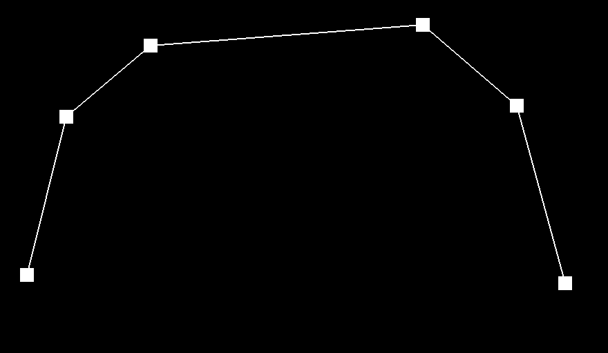
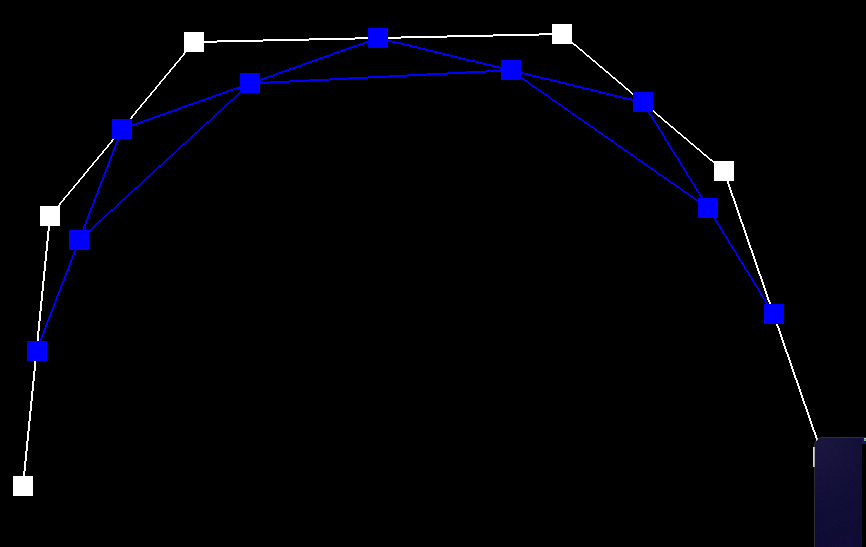
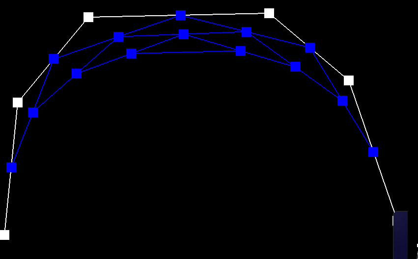
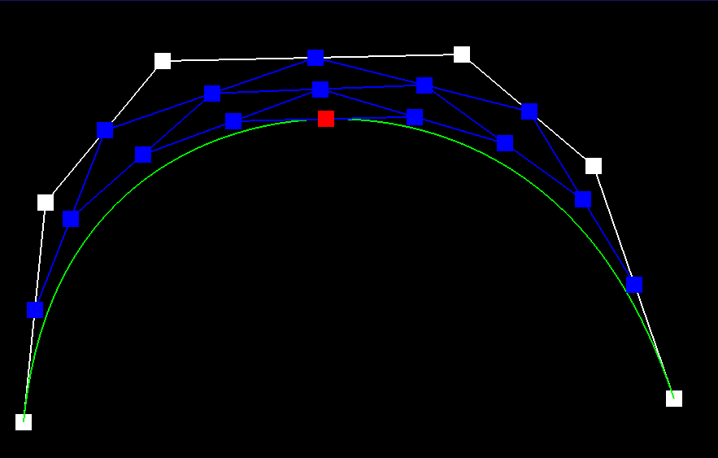
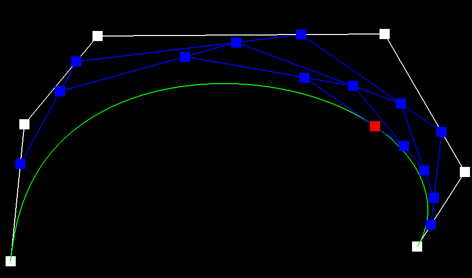
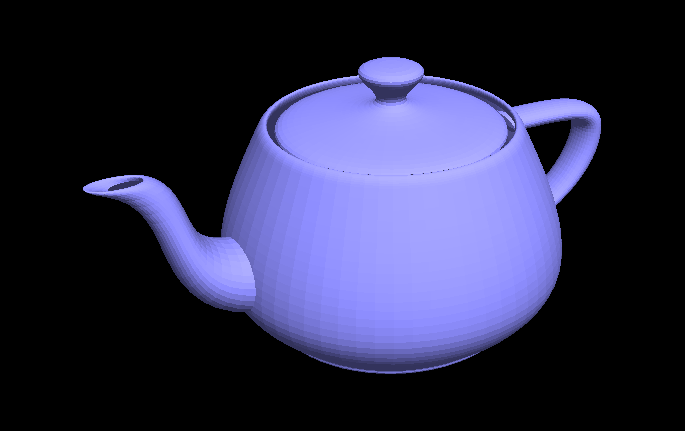
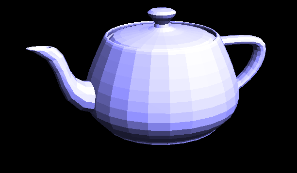
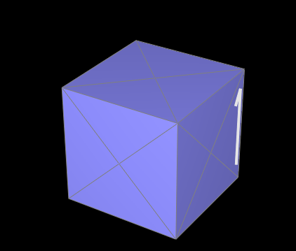

Overview
Another great homework. Time time we are working with bezier curves, paches, and a whole section on meshes. Learned a lot about how the datastructures interacts with each other throughout creating this complicated image. Very nice to see how everything just meshes ;) together at the end of task 6.
Section I: Bezier Curves and Surfaces
Part 1: Bezier Curves with 1D de Casteljau Subdivision
Briefly explain de Casteljau's algorithm and how you implemented it in order to evaluate Bezier curves.De Casteljau’s algorithm can be described as a recursive method to evaluating and subdividing Bezier curves. The curves are defined by a set of control point, which determines their shape. For example, for a cubic Bezier curve, the steps include: Linear Interpolation Subdivision Convergence (repeating subdivision until singular point) To implement this within my own code, I define the next set of points by iterating through all the current points and subdividing each point. Return the next set of points. Pregiven code handles recursive iteration
Take a look at the provided .bzc files and create your own Bezier curve with 6 control points of your choosing. Use this Bezier curve for your screenshots below.
Img 1-6, levels 0-5 + curve drawn. Img 7 adjusts points + moves point across curve with scroll.
Show screenshots of each step / level of the evaluation from the original control points down to the final evaluated point. Press E to step through. Toggle C to show the completed Bezier curve as well.
|

|
|
|

|

|
|

|
Show a screenshot of a slightly different Bezier curve by moving the original control points around and modifying the parameter \(t\) via mouse scrolling.

Part 2: Bezier Surfaces with Separable 1D de Casteljau
Briefly explain how de Casteljau algorithm extends to Bezier surfaces and how you implemented it in order to evaluate Bezier surfaces.A bezier surface is defined by a set of control points arranged in a grid. For surface of degree m in u direction, and n in v direction: (n + 1) X (m+1) control points We are essentially making multiple rows of bezier curves, we need to add a third axis: Z. Thus a Vector3D. The algorithm is applied in 3 steps: First evaluate bezier curve for given point and constant. We use this curve in evaluate1D to fully evaluate teh algorithm by iterating through all currentpoints. Simply plug into evaluate step here. We then want to evaluate the patch over th (u,v) parameters, we need to evaluate all bezier curves given control points and parameter u (for row), then stack up all these curves. With these stacked up curves, we reach a sort of ‘patch’. In this patch we evaluate the ‘column’ the opposite axis. We can just run evaluate1D once on parameter V to get the final singular point.
Show a screenshot of bez/teapot.bez (not .dae) evaluated by your implementation.

Section II: Triangle Meshes and Half-Edge Data Structure
Part 3: Area-Weighted Vertex Normals
Briefly explain how you implemented the area-weighted vertex normals.We need to calculate by first getting the face norm, then finding its area, use this area to scale the facenormal unit. Do this for all triangles in a loop. First iterate for the 3 vertices of the triangle by iterating through the halfedges. Once we have the 3 vertices’ positions, we can simply find the cross between (v2 - v1, v3 - v1), (or any other variation from 2 adjacent edges), thai gives us the face Normal. We divide this normal by 2 to get the area. Multiply this area, which is essentially the weight, with the facenormal unit. Lastly, check if N.norm() is greater than 0. If so, we normailize N. This is to avoid divisions by 0 and to only take in meaningful values that contribute to the lighting. Return.
Show screenshots of dae/teapot.dae (not .bez) comparing teapot shading with and without vertex normals. Use Q to toggle default flat shading and Phong shading.

Part 4: Edge Flip
Briefly explain how you implemented the edge flip operation and describe any interesting implementation / debugging tricks you have used.For the full scale of my algorithm: First determine if the given edge is_boundary() as it is a special case. Should not be modified just return e0. In order to actually implement the edgeflip, the basic idea is to have everything laid out in front of you first. Step1: gather all the original points including: Half edges Vertices Faces We do not have to worry about getting the edges themselves as they are tied to the half edges. (we are simply reassigning pointers here) Step 2: Modify pointers I followed the guidelines and correctly fixed the pointers of: Reassigning all half edges' faces Reassigning all vertex half edge pointers Reassigning All face -> half edge pointers Reassigning halfedges->next halfedge pointers. Assigning halfedge’s vertex Overall a very tedious thing to do. I had to draw out the triangles and label everything correctly. Could not do this in my head at all. Debugging was a pain as just looking at the image was not enough. Sometimes there would be a hole, sometimes it wouldn’t flip at all, etc. Just all on making sure the pointers were correct. Every single one of them had to be precise, it gets worse in part 5. >:(
Show screenshots of the teapot before and after some edge flips.
.png)
.png)
Write about your eventful debugging journey, if you have experienced one.
YOUR RESPONSE GOES HERE
Part 5: Edge Split
Briefly explain how you implemented the edge split operation and describe any interesting implementation / debugging tricks you have used.Edgesplitting was very similar to edge flipping in the sense that the entire algorithm is just basically reassigning pointers. However in edge splitting, we are also creating new elements as well. (Just even more adjusting and assigning of pointers). To edge split, again, define all current pointers (all half edges, vertex, face). The new step is to also create 3 new edges, as the edge that is inputted is going to be cut in half and replaced with another edge and 2 more edges stemming from the midpoint to both sides. With this, we also need to add 2 new faces as well as a new vertex that stands in the middle. To proceed with the algorithm: Get the new vertex position :(e0->halfedge()->vertex()->position + e0->halfedge()->twin()->vertex()->position) / 2.0 Assign all new half edges using setNeighbor. Tricky keeping track of everything, but once I decided to actually draw out and label everything, it was pretty simple. Just tedious. Update all old half edges UPdate vertex->halfedge pointer Update edge->halfedge pointers Update face->halfedge pointers #special case: for part 6, i realized that instead of trying to find the new edges in part6’s algorithm, it would be easier to just set the 2 new edges here instead. (set the flag to true here) Return new vertex iterator. DONE!
Show screenshots of a mesh before and after some edge splits.
.png)
.png)
Show screenshots of a mesh before and after a combination of both edge splits and edge flips.
.png)
Write about your eventful debugging journey, if you have experienced one.
YOUR RESPONSE GOES HERE
If you have implemented support for boundary edges, show screenshots of your implementation properly handling split operations on boundary edges.
YOUR RESPONSE GOES HERE
Part 6: Loop Subdivision for Mesh Upsampling
Briefly explain how you implemented the loop subdivision and describe any interesting implementation / debugging tricks you have used.This question was very tricky, but thanks to the guideline, it went pretty smoothly. I first didn’t understand the point of computing new positions before computing the splits/flips. But I realize that this is a much easier way to keep track of the new variables as this is essentially a recursive function. To do the algorithm (in respects to each step): 1. We want to sum adjacentPoints, following the loop subdivision formulas. To do this, we loop through each vertex currently in the mesh. For each vertex, we sum the adjacent positions (all continuous half edges within that triangle) While we are summing the adjacent points, we also increment the vertex degree (want to keep track of degree, Vector3D sum to calculate: v->newPosition = (1 - n * u) * v->position + u * sumAdjacentPoints; where u is: (n == 3) ? 3.0 / 16 : 3.0 / (8.0 * n); This gives us v->newPosition. Will be used later. We also set v->isNew to false here to reset the calculations from the previous iteration. 2. To get the new edge position, we use the 3.0 / 8.0 * (A + B) + 1.0 / 8.0 * (C + D); formula after getting ABCD -> HE, HET, HEN, HENT HE- > halfedge, T-> twin, N-> next Vertex positions 3. We will now proceed with splitting the edges. This was where I was stuck for a good amount of time. I had trouble finding ways to get all the new edges. I later realized that I could just modify task 5 instead.. To do algorithm: Make a temporary list for original edges. Here we also want to reset all the isNew values to false. (don't think we need to make a copy, the main point is to reset the isNew values from the previous iteration here) Iterate through all the original edges, and split if (!e-isNew). Our splitting function now marks each new edge as isNew. We need to account for infinite looping, thus the condition. The way we are adding in these new split vertices is by assigning it to a new variable of VertexIter. We then set this new vertex’s position to a->newPosition (pre calculated, nice) This updates the edges position to be used in the next iteration. Set V->isNew to true. This will allow us to keep track of exactly which edges to flip in step 4. 4. We now flip every NEW (blue from hw picture) edge that connects a NEW vertex to an OLD vertex. To do this we simply reiterate through all the edges in mesh. Find half edge -> vertex and the twin. This gives us pointers to the two vertices that the edge connects to. Simply check the condition and flip. 5. We have to update all the new vertex positions to the final Vertex::position. SImply loop through all vertices in the mesh and update position: v->position = v->newPosition;
Take some notes, as well as some screenshots, of your observations on how meshes behave after loop subdivision. What happens to sharp corners and edges? Can you reduce this effect by pre-splitting some edges?
Sharp edges and corners round off into a round smooth bump after lots of subdivisions. We can definitely reduce this effect by presplitting and removing that edge in the first place, spreading out the vertex degrees, as the algorithm is linear and does not specifically target anything. It simply uniformly subdivies each and every triangle.
<.png)
.png)
Load dae/cube.dae. Perform several iterations of loop subdivision on the cube. Notice that the cube becomes slightly asymmetric after repeated subdivisions. Can you pre-process the cube with edge flips and splits so that the cube subdivides symmetrically? Document these effects and explain why they occur. Also explain how your pre-processing helps alleviate the effects.
As the splits and flips are computed evenly throughout the whole shape. Wherever there are more edges connected to a vertex, or if the degrees of the vertices are uneven in general, the vertex with the highest degree is essentially going to make a ‘pointy’ shape as the subdivision around that vertex are much greater than the rest of the vertices. By evening out all the degrees of the cube, we can reach ^ (picture above) where the shape is much more rounded out and even.
<
.png)
If you have implemented any extra credit extensions, explain what you did and document how they work with screenshots.
YOUR RESPONSE GOES HERE
Part 7 (Optional, Possible Extra Credit)
Save your best polygon mesh as partsevenmodel.dae in your docs folder and show us a screenshot of the mesh in your write-up.YOUR RESPONSE GOES HERE
Include a series of screenshots showing your original mesh and your mesh after one and two rounds of subdivision. If you have used custom shaders, include screenshots of your mesh with those shaders applied as well.
YOUR RESPONSE GOES HERE
Describe what you have done to enhance your mesh beyond the simple humanoid mesh described in the tutorial.
YOUR RESPONSE GOES HERE